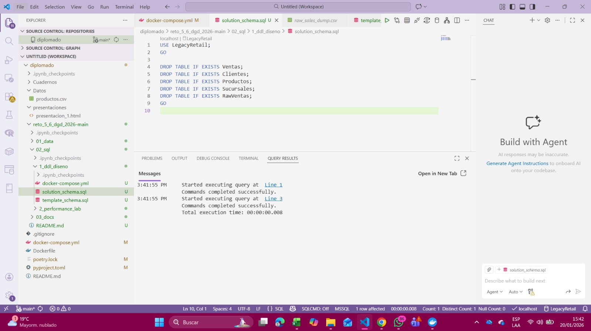
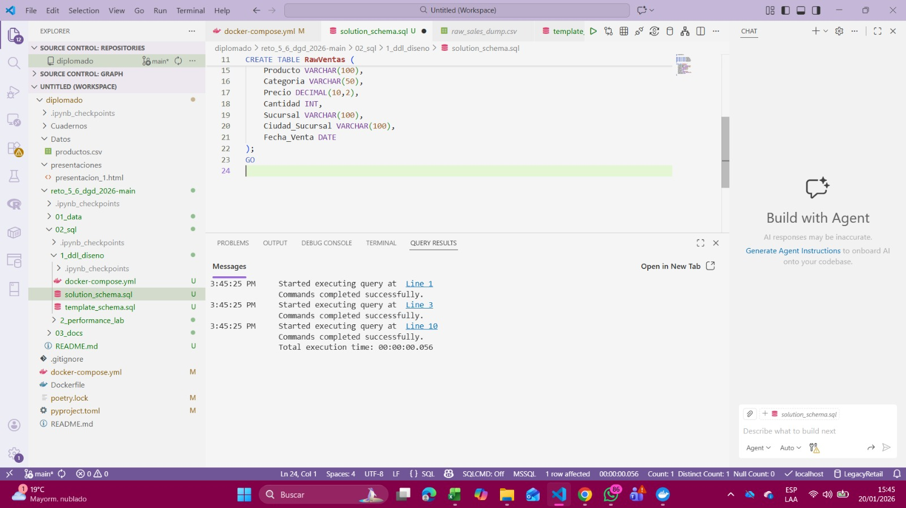
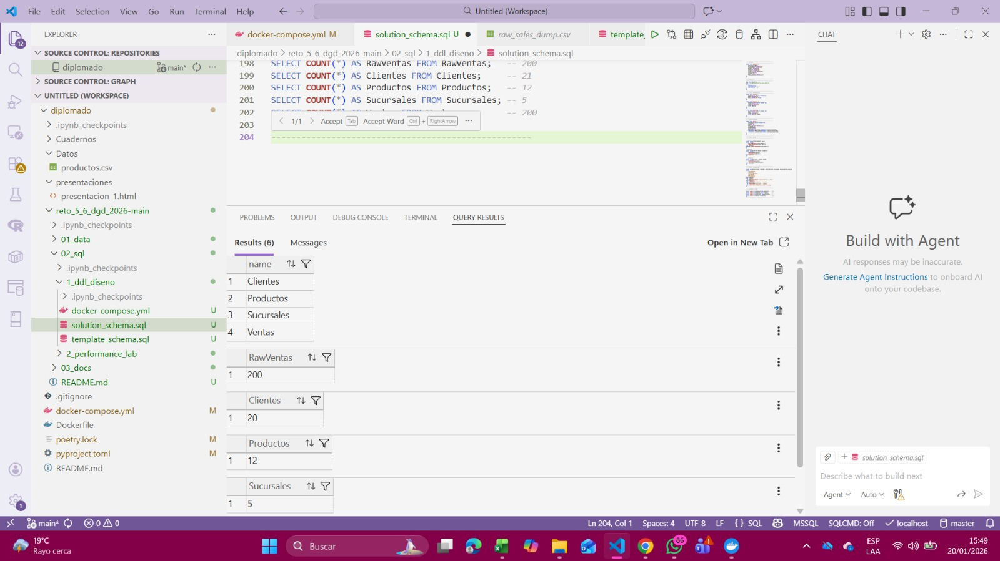
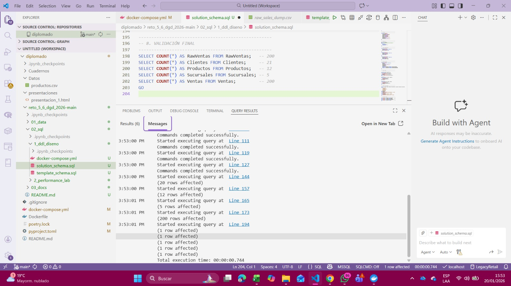
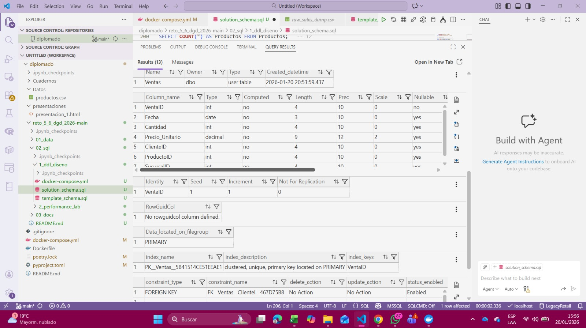
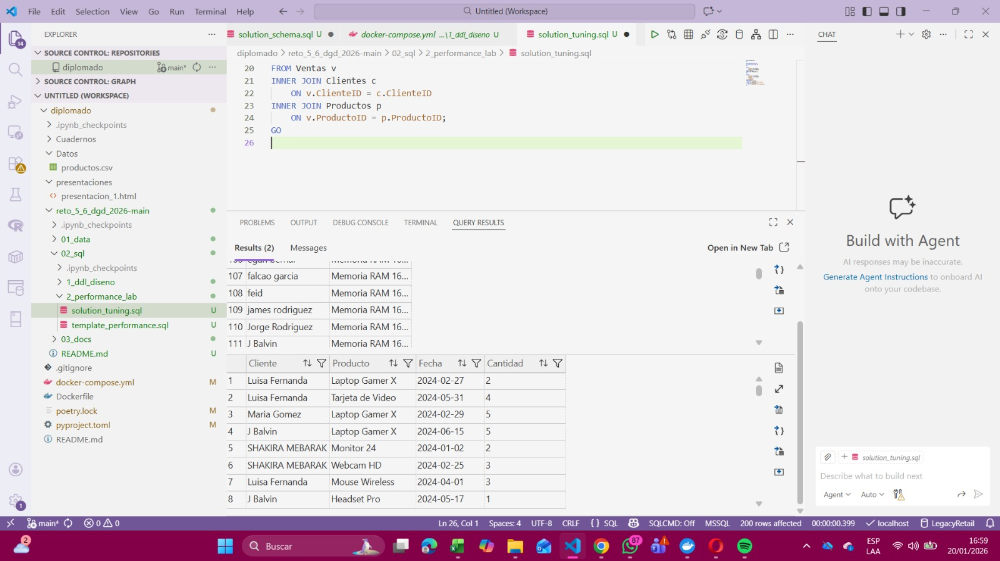
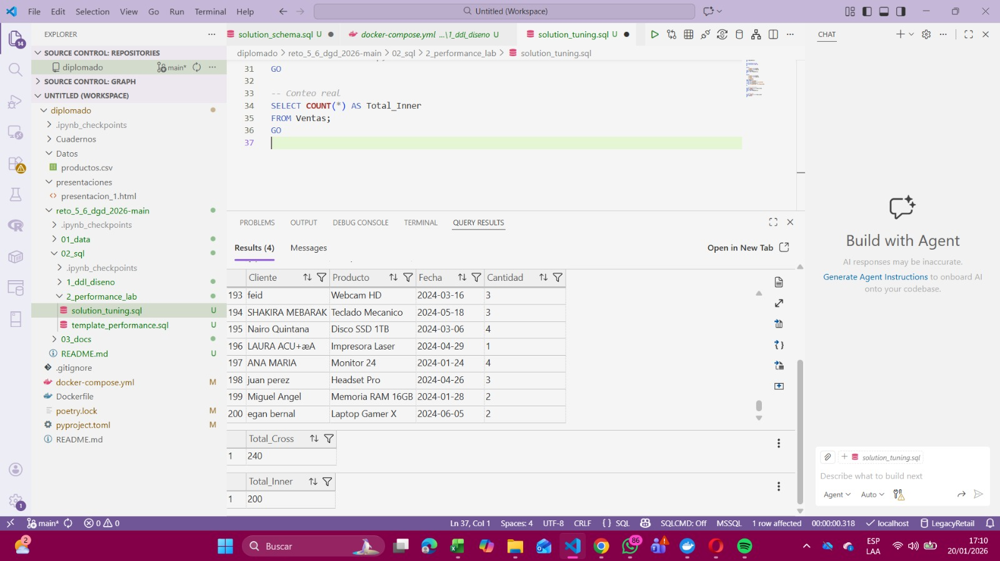
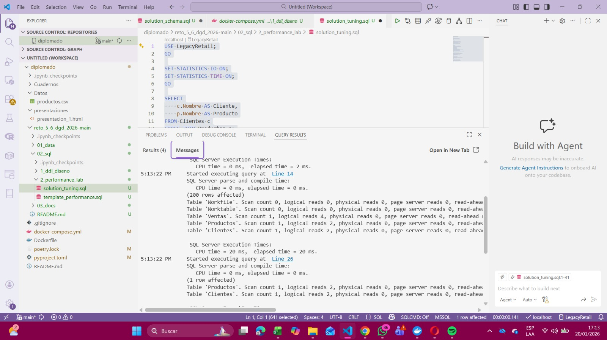
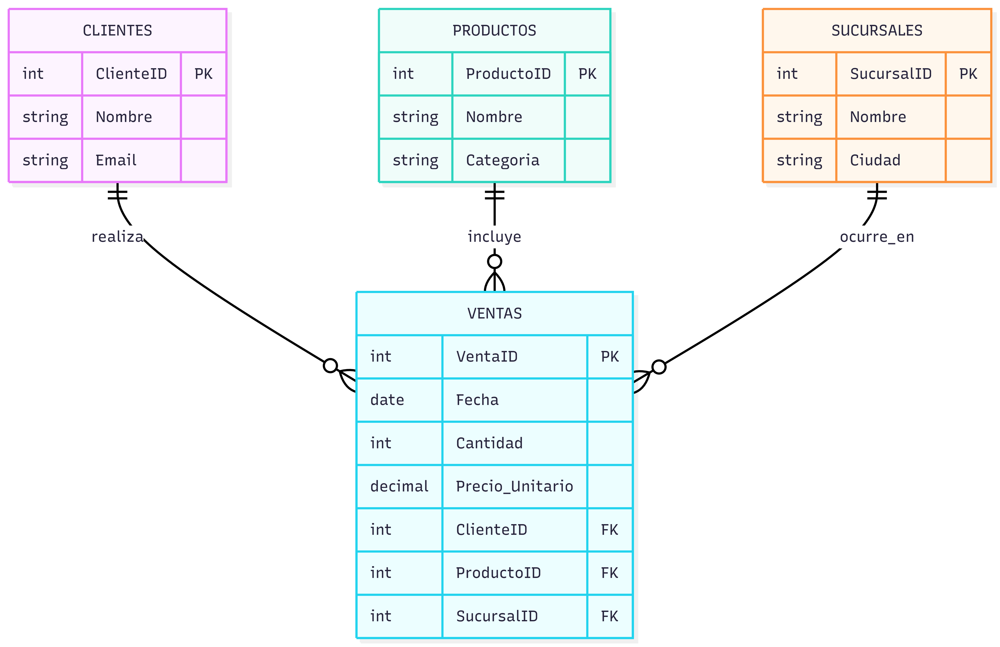

Proyecto: LegacyRetail
Diplomado: Gestión de Datos – 2026
Estudiante: Karen Suarez
Durante varios años, LegacyRetail S.A. almacenó la información de sus ventas en un archivo plano sin ningún tipo de estructura relacional. Este archivo contenía todos los datos mezclados en una sola tabla, lo que dificultaba el análisis, generaba datos repetidos y provocaba errores al momento de realizar consultas.
Al intentar migrar esta información directamente a SQL Server, se evidenciaron múltiples problemas tanto a nivel de diseño como de rendimiento. Por esta razón, el objetivo de este proyecto fue reorganizar la información aplicando los principios de la Tercera Forma Normal (3FN) y analizar cómo un buen diseño impacta directamente en el performance de las consultas SQL.
El trabajo se divide en dos partes principales:
El primer problema identificado fue que toda la información se encontraba en una sola estructura, donde se repetían constantemente los datos de clientes, productos y sucursales. Por ejemplo, un mismo cliente aparecía varias veces con el mismo correo electrónico, y una misma sucursal se repetía en múltiples registros de ventas.
Esto generaba:
Antes de normalizar, fue necesario entender qué información correspondía realmente a cada entidad del negocio.
Antes de comenzar con el diseño del modelo relacional, se realizó una limpieza completa del entorno de trabajo, eliminando todas las tablas existentes y asegurando que la base de datos LegacyRetail estuviera lista para una nueva implementación.

Este paso fue clave para evitar errores causados por ejecuciones previas y para poder validar correctamente cada etapa del proceso.
Se creó la tabla RawVentas como una tabla de staging, cuyo objetivo fue almacenar los datos originales del archivo CSV sin aplicar transformaciones inmediatas.

Durante esta etapa se identificaron varios problemas en los datos, como espacios en blanco, diferencias en el formato de texto y repetición de información, lo cual confirmó la necesidad de normalizar el modelo.
Luego del análisis de los datos crudos, se definieron las entidades principales del sistema y se crearon las siguientes tablas:
Cada tabla fue diseñada con una clave primaria y con atributos que dependen únicamente de dicha clave, cumpliendo con los principios de la Tercera Forma Normal.

La tabla Ventas se definió como la tabla central del modelo, encargada de relacionar a los clientes, productos y sucursales.
Durante la carga de datos hacia las tablas normalizadas se presentaron algunos retos, especialmente relacionados con la identificación única de los clientes y la eliminación de duplicados.
Para resolver esto, se utilizó el correo electrónico como identificador único de cliente, permitiendo consolidar múltiples registros repetidos en una sola fila dentro de la tabla Clientes.
Una vez completada la carga, se realizó un conteo de registros para validar que la información se hubiera distribuido correctamente entre las tablas.
Resultados obtenidos:

Estos resultados confirmaron que el proceso de normalización fue exitoso y que la redundancia fue eliminada.
Se revisó la estructura de la tabla Ventas para verificar que los tipos de datos, la clave primaria y las columnas de referencia estuvieran correctamente definidas.

Finalmente, se validó que las claves foráneas estuvieran correctamente configuradas, asegurando la relación entre las tablas y evitando la inserción de datos inconsistentes.
Para analizar el rendimiento de las consultas, se activaron las opciones STATISTICS IO y STATISTICS TIME, lo que permitió observar el consumo de recursos de cada consulta ejecutada.

Se ejecutó una consulta utilizando CROSS JOIN entre las tablas Clientes y Productos. Esta consulta generó un producto cartesiano, combinando todos los registros de ambas tablas.

El resultado de esta consulta generó una gran cantidad de filas sin relación real de negocio, lo que se reflejó directamente en un aumento del consumo de recursos.

Las métricas obtenidas mostraron un alto número de lecturas lógicas, evidenciando que este tipo de consulta no es adecuada para este escenario.

Posteriormente, se ejecutó una consulta utilizando INNER JOIN, relacionando correctamente las tablas a través de la tabla Ventas.

Esta consulta devolvió únicamente los registros con relación real, reduciendo significativamente el consumo de recursos.
| Aspecto | CROSS JOIN | INNER JOIN |
|---|---|---|
| Relación de negocio | No existe | Correcta |
| Filas generadas | Excesivas | Necesarias |
| Lecturas lógicas | Altas | Reducidas |
| Rendimiento | Bajo | Optimizado |
CROSS JOIN puede generar graves problemas de rendimiento.INNER JOIN mejora considerablemente la eficiencia de las consultas.Este proyecto permitió comprender la importancia del diseño de bases de datos y cómo este impacta directamente en el rendimiento y la estabilidad de un sistema.
El siguiente diagrama representa el modelo relacional normalizado a Tercera Forma Normal (3FN), donde las entidades Clientes, Productos y Sucursales se relacionan a través de la tabla Ventas, la cual actúa como tabla central del modelo.
